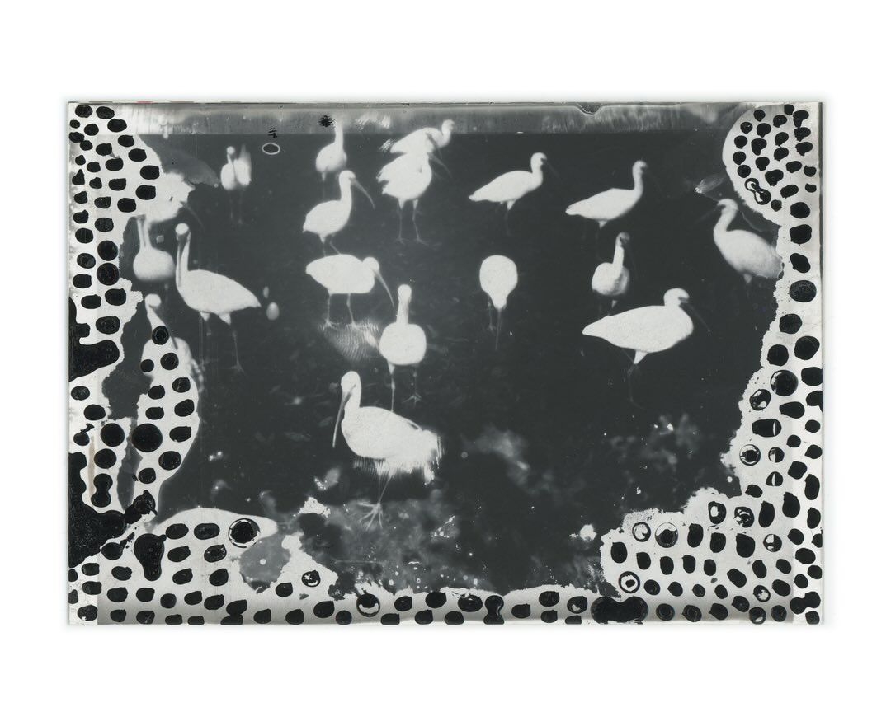
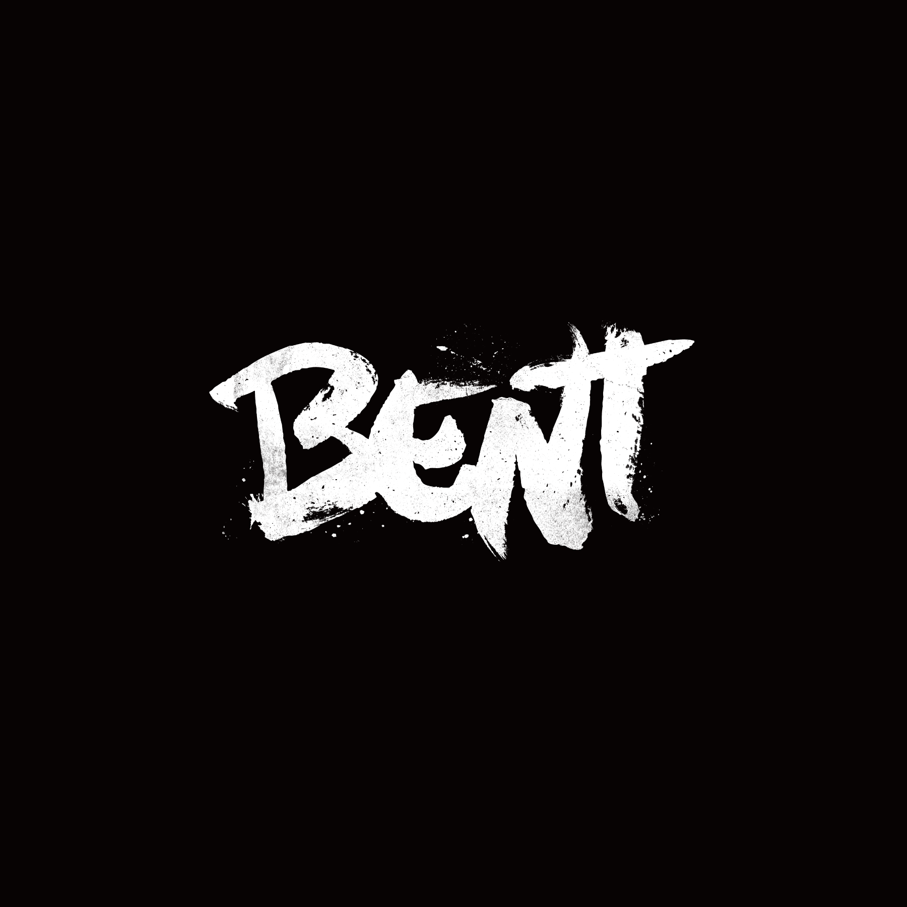
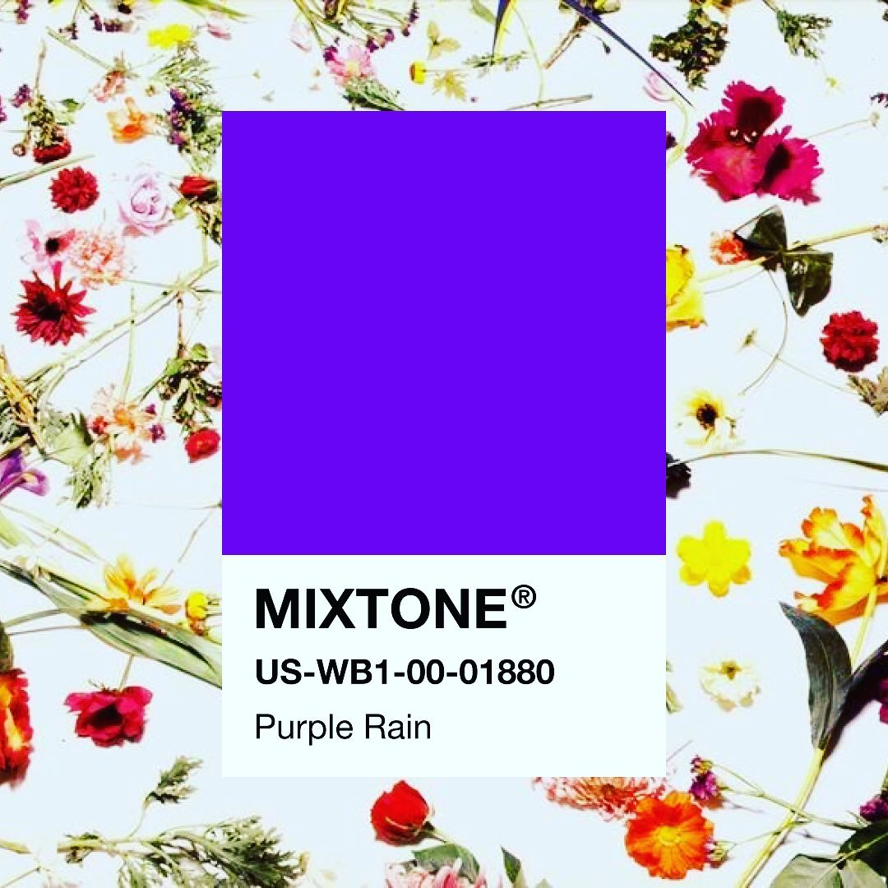
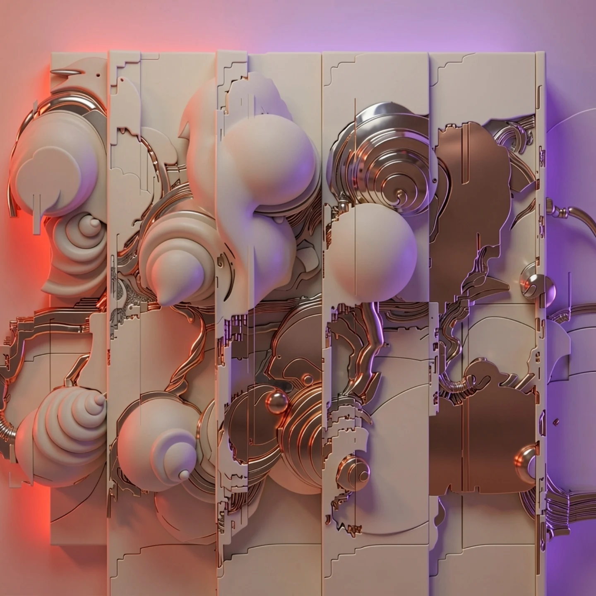
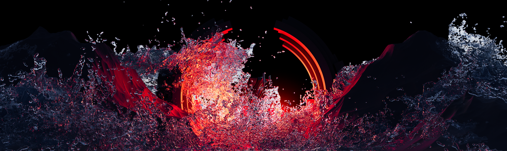
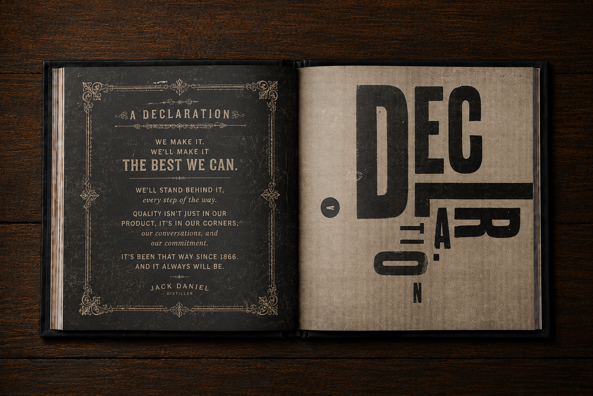

A podcast by two practicing creatives
VariousMethods ofEscape
Long-form conversations about the work, rituals, detours, and obsessions that keep creative people moving.
EnterCreativity rarely moves in a straight line. Various Methods of Escape follows the side roads—where a practice begins, what sustains it, and where it goes when no one is watching.
Creative lives,
one method at a time.

Artwork / Erik WinkowskiErik
Winkowski
Video as collage. Drawing over daily life. The productive tension between a loose sketch and a finished image.
Visit Erik’s studio ↗
Work / Kody ChamberlainKody
Chamberlain
Storytelling, drawing, and the hard-won craft behind making worlds that hold together.
Visit Kody’s studio ↗
Artwork / Lee MartinLee
Martin
Netmaker, musician, and builder of independent things for the internet.
Visit Lee’s world ↗
Artwork / Joshua DavisJoshua
Davis
Generative systems, computational play, and the moment a set of rules starts to surprise its maker.
Visit Joshua Davis Studios ↗
Artwork / Zach LaPlanteZach
LaPlante
Directing, design, and the craft of making images move with force.
Visit Upperline ↗
Work / Elizabeth MargiottaElizabeth
Margiotta
Design direction, typography, and building visual identities that can carry a story.
Visit Liz’s portfolio ↗